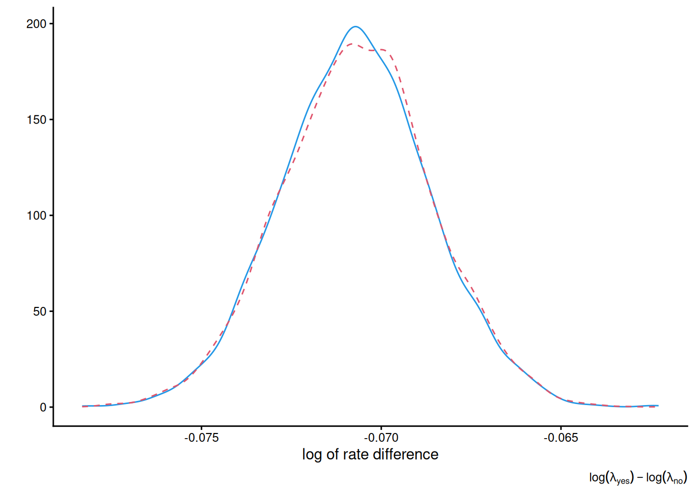
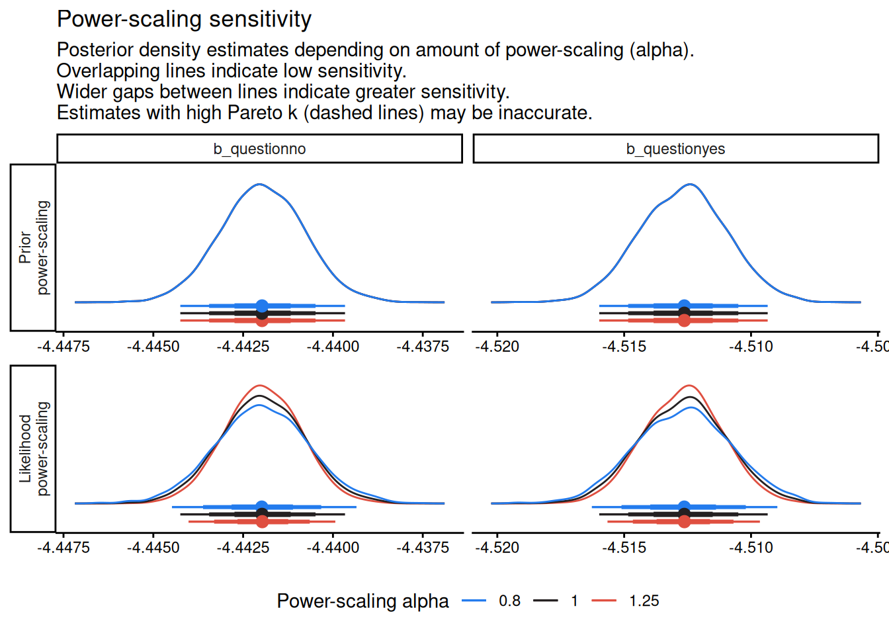
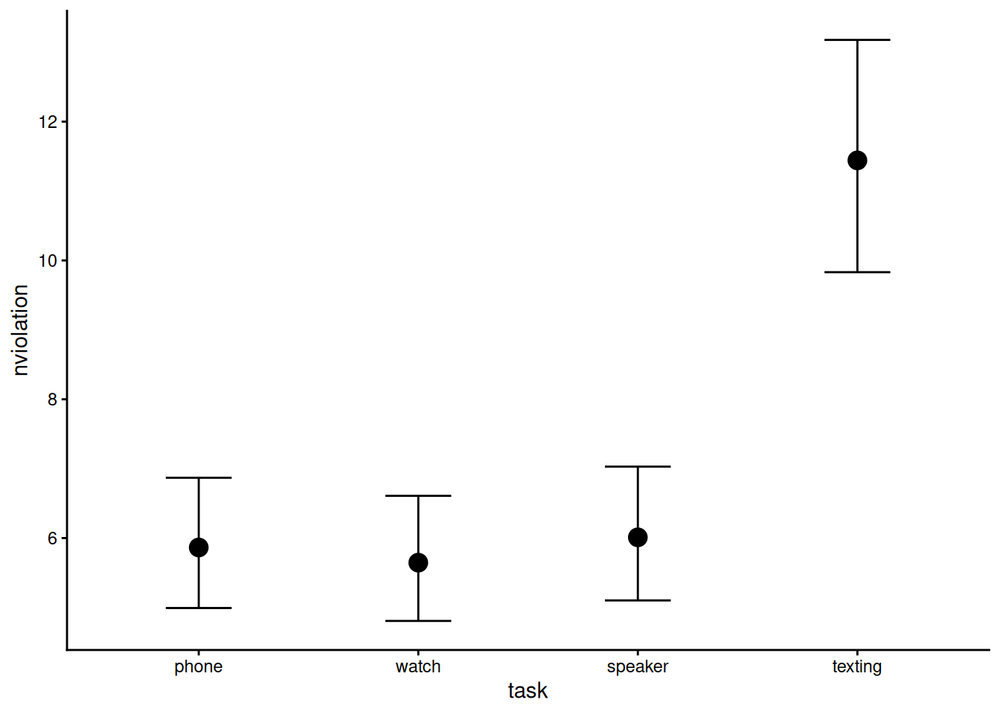

library(patchwork)
library(ggplot2)
theme_set(theme_classic())
suppressPackageStartupMessages(library(brms, warn.conflicts = FALSE))
library(priorsense)
data(upworthy_question, package = "hecbayes")
# Moment matching - posterior parameters
alpha <- 0.25
beta <- 25
summary_stats <- upworthy_question |>
dplyr::group_by(question) |>
dplyr::summarize(
total_impressions = sum(impressions),
total_clicks = sum(clicks)) |>
dplyr::ungroup() |>
as.vector()
n_yes <- summary_stats$total_impressions[1]
y_yes <- summary_stats$total_clicks[1]
n_no <- summary_stats$total_impressions[2]
y_no <- summary_stats$total_clicks[2]
set.seed(1234)
post_data_upworthy_question <-
data.frame(
yes = rgamma(n = 1e4, shape = alpha + y_yes, rate = beta + n_yes),
no = rgamma(n = 1e4, shape = alpha + y_no, rate = beta + n_no))
# Posterior mean of risk ratio
post_mean <- with(post_data_upworthy_question, mean(no/yes))Lecture 3
Upworthy archive
We could also use brms interface to Stan to fit the Poisson regression model. The parameter here by default is on the log scale and is set on the difference between groups, but we remove the intercept so that both parameter have the same prior. Since we are taking a Gaussian prior for the log rate, we can consider a log-Gaussian distribution, and taking a mean of \(\log(0.01)=-4.6\) with a standard deviation of \(1\) gives more or less reasonable proportions. The parameters are sampled using Markov chain Monte Carlo (more later in the trimester), but the output consists of posterior samples.
headline_mod <- brm(
clicks ~ offset(log(impressions)) + 0 + question,
family = poisson(link = "log"),
data = upworthy_question,
prior = set_prior(
prior = "normal(-4.60517, 1)",
# log(0.01) = -4.60517
class = "b"),
backend = "cmdstanr",
silent = 2
)
# Summary for model coefficients
fixef(headline_mod, probs = c(0.25,0.75)) Estimate Est.Error Q25 Q75
questionyes -4.512663 0.001702378 -4.513840 -4.511510
questionno -4.441961 0.001159446 -4.442741 -4.441177post_samp <- brms::posterior_samples(
headline_mod,
pars = c("questionno","questionyes"))ggplot() +
geom_density(
data = post_samp,
mapping = aes(x = (b_questionyes - b_questionno)),
alpha = 0.5,
col = 4) +
geom_density(
data = post_data_upworthy_question,
mapping = aes(x = log(yes)-log(no)),
alpha = 0.5,
linetype = "dashed",
col = 2) +
labs(x = "log of rate difference", y = "",
caption = expression(log(lambda["yes"]) - log(lambda["no"]))) +
theme_classic()
We can use the priorsense package to perform a sensitivity analysis of the regression parameter for the log mean difference. The results here indicate little impact of the prior, which is totally unsurprising given the sample size.
priorsense::powerscale_sensitivity(headline_mod)Sensitivity based on cjs_dist
Prior selection: all priors
Likelihood selection: all data
variable prior likelihood diagnosis
b_questionyes 0 0.081 -
b_questionno 0 0.080 -priorsense::powerscale_plot_dens(headline_mod)
Distraction from smartwatches
The following code is Stan code (mean-centered for the random effect) for the Poisson “mixed effect” model of Brodeur et al. (2021).
data {
int<lower=0> N;
int<lower=1> K; // nb fixed effect levels for distraction type
int<lower=1> J; // nb random effect levels for individuals
array[N] int<lower=0> y; // vector of data
array[N] int<lower=1, upper=J> id;
array[N] int<lower=1, upper=K> fixed;
}
parameters {
vector[K] beta;
sum_to_zero_vector[J] alpha;
real<lower=0> kappa;
}
model {
kappa ~ exponential(0.6);
beta ~ normal(0, 10);
alpha ~ normal(0, sqrt(J * inv(J - 1)) * kappa);
y ~ poisson_log(alpha[id] + beta[fixed]);
}but this model is also easily fitted in brms, albeit with slightly different priors.
data(smartwatch, package = "hecbayes")
# Random effect model with default priors
smartwatch_mod <- brm(
nviolation ~ 0 + task + (1 | id),
data = smartwatch,
family = poisson(link = "log"),
set_prior(
prior = "normal(0, 5)",
class = "b"),
backend = "cmdstanr", # faster than rstan
silent = 2) # remove verbose output
summary(smartwatch_mod) Family: poisson
Links: mu = log
Formula: nviolation ~ 0 + task + (1 | id)
Data: smartwatch (Number of observations: 124)
Draws: 4 chains, each with iter = 2000; warmup = 1000; thin = 1;
total post-warmup draws = 4000
Multilevel Hyperparameters:
~id (Number of levels: 31)
Estimate Est.Error l-95% CI u-95% CI Rhat Bulk_ESS Tail_ESS
sd(Intercept) 0.56 0.08 0.42 0.75 1.00 885 1777
Regression Coefficients:
Estimate Est.Error l-95% CI u-95% CI Rhat Bulk_ESS Tail_ESS
taskphone 1.77 0.12 1.52 2.02 1.01 631 1237
taskwatch 1.73 0.13 1.48 1.98 1.01 624 982
taskspeaker 1.79 0.13 1.54 2.03 1.01 618 1184
tasktexting 2.43 0.11 2.20 2.65 1.01 543 970
Draws were sampled using sample(hmc). For each parameter, Bulk_ESS
and Tail_ESS are effective sample size measures, and Rhat is the potential
scale reduction factor on split chains (at convergence, Rhat = 1).fixef(smartwatch_mod) Estimate Est.Error Q2.5 Q97.5
taskphone 1.769084 0.1247111 1.521579 2.015405
taskwatch 1.731203 0.1254586 1.483066 1.975162
taskspeaker 1.793016 0.1253032 1.538416 2.032193
tasktexting 2.433497 0.1146008 2.203397 2.648243conditional_effects(x = smartwatch_mod,
effects = "task",
prob = 0.8)
References
Brodeur, M., Ruer, P., Léger, P.-M., & Sénécal, S. (2021). Smartwatches are more distracting than mobile phones while driving: Results from an experimental study. Accident Analysis & Prevention, 149, 105846. https://doi.org/10.1016/j.aap.2020.105846